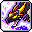

基本介紹
職業類型：英雄團、法師
主武器：長杖or短杖 副武器：可拿盾或文件（推盾牌可＋星力）
主屬性：智力
操作方法：技能融合
優勢
1.爆發攻擊力高
2.坐騎有龍可以騎
3.傳授技能適合練分身
4.技能不吃攻訴加成
弱勢
1.無法持續性輸出
2.沒有綁王技能
傳授技能
●輪之堅持：
1.符文輪持續時間+50%
新手技能
●回家: 消耗MP100，傳送到農場前院(出生地) 冷卻時間 600秒
●輪之堅持: Lv2：輪的持續時間+50%
一轉技能
龍之魂: 物/魔防+145、移速+10
●魔幻鏈: MaxMP+20%、魔攻+20 每升一等級MaxMP+120
●龍之火花: 攻擊時，以40%的機率發動100%的額外傷害
●魔力之環I: 消耗MP 24，對前方4名敵人以150%的傷害攻擊2次
●瞬間移動: 消耗MP 22，搭配方向鍵，瞬間移動 275的距離 向下瞬間移動距離+85
●魔心防禦 開關技: 消耗MP 30，受到傷害-10%，85%的傷害以MP代替
二轉技能
●魔力之環II: 消耗MP 30，對前方5名敵人以130%的傷害攻擊3次
●迅捷 - 回來吧！ 融合技能: 寶貝龍使用
龍之捷、風之捷、閃雷之捷後，使用回來吧！即可發動 發動後，周圍8名敵人在60秒內受到最終傷害+10%的詛咒
●風之捷 融合技能: 寶貝龍使用
龍之捷後，使用風之環即可發動。 發動後，消耗MP 60，用風刃對3名敵人發射55%的傷害2次，持續3.5秒 (無視反盾)
●智慧昇華: 智力+40
●交感: 寶貝龍發動攻擊時，龍魔導士的傷害+20% 被動效果 : 格檔+30%
●咒語精通: 熟練度+50%、爆擊+15%、魔攻+10 裝備短杖時，爆擊+3%
●援助跳躍: 消耗MP 18，跳躍時，使用跳躍+方向鍵↑，就能跳更高 只有寶貝龍在非攻擊狀態下時可以使用
●進階龍之火花: 攻擊時，以100%的機率發動150%的額外傷害
●龍之捷 寶貝龍技能: 消耗MP 60，對8名敵人以95%的傷害攻擊4次，持續3.5秒 冷卻時間 8秒 (無視反盾)
●風之環: 消耗MP 40，對6名敵人以270%的傷害攻擊2次
●回來吧！: 立刻召喚攻擊中的寶貝龍 冷卻時間 2秒
●極速詠唱: 消耗MP 38，180秒內，攻速+2階段
三轉技能
●魔力之環III: 消耗MP 37，對前方6名敵人以150%的傷害攻擊4次
●潛水 - 回來吧！ 融合技能: 寶貝龍使用
龍之躍、閃雷之躍、塵土之躍後，使用回來吧！即可發動 發動後，周圍隊員在60秒內攻速+1階段
●閃雷之捷 融合技能: 寶貝龍使用
龍之捷後，使用閃雷之環即可發動 發動後，消耗MP 70，產生五芒星魔法陣，對8名敵人以135%的傷害攻擊6次 (無視反盾)
●閃雷之躍 融合技能: 寶貝龍使用龍之躍後，使用閃雷之環即可發動 發動後，消耗MP 70，持續4秒產生4個電球，對1名的敵人造成 135%的傷害1次 電球擊中敵人或經過一定時間後就會消失。
●魔法爆擊: 爆擊+30%、爆傷+15%→20%
●魔法抵抗: 狀態異常抗性+20%、屬性抗性+25%、魔法防禦力+300
●魔力增幅: 消耗MP增幅130%，攻擊魔法的最終傷害+15%→20%→30%
●龍之潛能: 無視+20%
●龍之躍 寶貝龍技能: 消耗MP 70，對6名敵人以130%的傷害攻擊3次，持續3.5秒 冷卻時間 8秒 (無視反盾)
風之環傷害+150%p
龍之捷傷害+50%p
風之捷傷害+30%p
閃雷之捷傷害+80%p
●閃雷之環: 消耗MP 48，對8名的敵人以170%的傷害攻擊5次
●自然力重置: 消耗MP 53，180秒內，攻擊屬性抗性-10% 被動效果 最終傷害+15%
●魔法殘骸: 被融合技能擊中的敵人周圍產生魔法殘骸 1個，冷卻時間0.6秒，最多產生15個 發動時，消耗MP 100，對15名敵人以70%的傷害攻擊1次，每5個魔法殘骸傷害+ 40%p 魔法殘骸經過一定的時間就會消失
四轉技能
●魔力之環IV: 消耗MP 42 1打：對前方8名敵人以290%的傷害攻擊4次 2打：對前方8名敵人以330%的傷害攻擊4次
●氣息 - 回來吧！ 融合技能: 寶貝龍使用
龍之氣息、風之氣息、大地氣息後，使用回來吧！即可發動 發動後，周圍8名敵人持續30秒受到150%火焰屏障的傷害
●大地氣息 融合技能: 寶貝龍使用
龍之氣息後，使用地之環即可發動 發動後，消耗MP 80，對4名敵人以280%的傷害攻擊5次 除傷害35％外(98％) 依敵人數量分散(182％)傷害 持續3.5秒 (無視反盾)
●風之氣息 融合技能: 寶貝龍使用
龍之氣息後，使用風之環即可發動 發動後，消耗MP 80，對8名敵人以215%的傷害攻擊5次，持續3.5秒 攻擊HP30%以下的敵人傷害+65%p (無視反盾)
●塵土之躍 融合技能: 寶貝龍使用
龍之躍後，使用地之環即可發動 發動後，消耗MP 70，寶貝龍捨身攻擊，粉碎3塊岩石對6名敵人以190%的傷害攻擊6次 (無視反盾)
●強化的魔法殘骸: 被融合技能擊中的敵人周圍產生魔法殘骸 1個，冷卻時間0.4秒，最多產生15個 發動時，消耗MP 140，對15名敵人以110%的傷害攻擊1次， 每5個魔法殘骸傷害+ 50%p→100％p 魔法殘骸經過一定的時間就會消失
●精通魔法: 熟練度增幅為70%、魔攻+30、爆傷+8%→20%
●歐尼斯的意志: 被擊傷害-20%，寶貝龍攻擊時格檔+70%
●龍之怒: MP在30%以上時，魔力+35%
●高階龍之潛能: BOSS傷害+20%
●地之環: 消耗MP 58，對8名敵人以370%的傷害攻擊 5次
●龍之氣息 寶貝龍技能: 消耗MP 80，對8名敵人以240%的傷害攻擊5次，持續3秒 冷卻時間10秒 (無視反盾)
風之環傷害+660%p
龍之捷傷害+320%p
風之捷傷害+160％P
閃雷之捷傷害+300%p
閃雷之環傷害+200%p
龍之躍傷害+195%p
閃雷之躍傷害+210%p
塵土之躍傷害+420%p
●歐尼斯的祝福: 消耗MP 48，180秒內，物/魔防+600、魔攻+80
●龍神之怒: 消耗MP 400，對15名敵人以400%的傷害攻擊6次，附加爆擊 20% 冷卻時間 40秒 冷卻過程中，魔法殘骸傷害+20%
●楓葉祝福
●楓葉淨化
超技能
●龍之捷 - 冷卻減免: 冷卻時間-25%
●龍之捷 - 風之疾: 風刃+1個
●龍之捷 - 雷霆攻擊加成: 各個位置攻擊次數+1次
●龍之躍 - 冷卻減免: 冷卻時間-25%
●龍之躍 - 閃雷之疾: 閃電球+2個
●龍之躍 - 震撼地動: 傷害值+20%
●龍之氣息 - 冷卻減免: 冷卻時間-25%
●龍之氣息 - 地之疾: 怪物最大數量+2
●龍之氣息 - 風之加成: 對方的最低HP範圍+5%，傷害+85％P
●聖歐尼斯龍: 消耗MP 600，40秒內，召喚聖歐尼斯龍 對聖歐尼斯龍周圍的8名敵人以550%的傷害攻擊2次 召喚期間狀態異常抗性+80% 冷卻時間 80秒
●龍之主: 10秒內騎乘寶貝龍，騎乘時無敵，每0.3秒對10名的敵人以450%的傷害攻擊7次 冷卻時間 240秒 騎乘時持續按著技能鍵，即可攻擊
●英雄歐尼斯:消耗MP 100，60秒內傷害+10%，傷害最大值+10% 冷卻時間 120秒。只對隊員中的英雄職業有效
五轉技能
●元素滅殺破: 消耗MP 1000 連續4次使用最多對15名敵人 以1500％的傷害攻擊6次 追加100%爆擊 攻擊後依照命中的屬性 10秒內最終傷害+5% 冷卻時間 60秒 無視敵人反盾
●聖龍突襲 寶貝龍技能: 消耗MP1000 對12名敵人以900%的傷害攻擊7次持續2.5秒 冷卻時間30→20秒 無視反盾 不受攻速增加影響
●歐尼斯之氣息 融合技能 技能點共用: 範圍990% 寶貝龍使用
聖龍突襲後，使用元素滅殺破即可發動 發動後，寶貝龍混合多種屬性之力對12名敵人以1000％的傷害攻擊7次 持續4秒 無視反盾 不受攻速增加影響
●粉碎 - 回歸！ 融合技能 技能點共用: 範圍155% 寶貝龍使用
聖龍突襲、歐尼斯之氣息後，使用回來吧！即可發動 發動後，對12名敵人以300%無之領域的傷害攻擊3次
持續5秒
●星宮射線: 無視反盾 不受攻速增加影響 消耗MP1000 16秒內設置魔法陣 魔力補充至22時開始解放 剩餘時間最多對12名敵人以800%傷害攻擊6次 追加無視防禦100％ 屬性技能擊中敵人時 魔力補充3 每個技能限制補充一次；非屬性技能擊中敵人時 魔力補充1 無限制 冷卻180秒